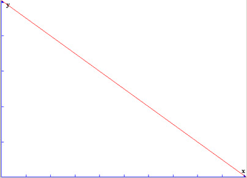
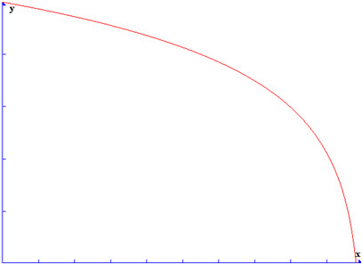
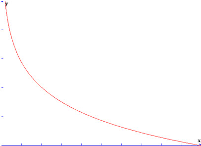
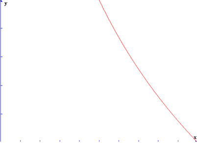
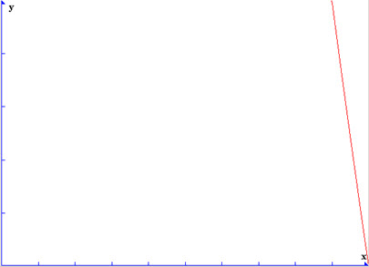

UDN
Search public documentation:
DistanceModelAttenutionJP
English Translation
中国翻译
한국어
Interested in the Unreal Engine?
Visit the Unreal Technology site.
Looking for jobs and company info?
Check out the Epic games site.
Questions about support via UDN?
Contact the UDN Staff
中国翻译
한국어
Interested in the Unreal Engine?
Visit the Unreal Technology site.
Looking for jobs and company info?
Check out the Epic games site.
Questions about support via UDN?
Contact the UDN Staff
Distance Model 減衰
ドキュメント概要: Unreal オーディオ システムにおける減衰とDistance Modelに関する情報。 ドキュメントの変更ログ: Zak Belica により作成。概観
減衰は、プレイヤーがサウンドから離れるにつれて、そのサウンドが小さくなる機能です。2 つの半径、MinRadius と MaxRadius を使用して動作します。サウンドの原点から MinRadius を通して移動すると、サウンドの音量は 100% です。MinRadius と MaxRadius の間を通ると、音量は 100% と静寂の間で直線的にフェードします。フェードの起こる率は DistanceModel プロパティに基づき、これは、半径間の音量をコントロールするためにいくつかのタイプのフォールオフ曲線を提供します。MaxRadius の外側に出ると、サウンドの限界の外側にいることになり、静寂しか聞こえなくなります。 以下が、利用可能な DistanceModel 減衰曲線のリストと説明です。 以下のすべてのグラフで、Y 軸は音量であり、X 軸が距離です。MinRadius は X 軸の原点であり、MaxRadius は X 軸の右端、x の部分に位置します。ATTENUATION_Linear
この減衰モデルは、距離に渡るサウンド音量の 1/1 の減少です。以下がグラフです。
使用事例: タイトな3D フォールオフ設定を必要としない一般的なループするアンビエント サウンドや、ディテールの低い背景サウンドでの使用に適しています。広半径のアンビエント サウンドのクロスフェードにも適しています。ATTENUATION_Logarithmic
この減衰モデルは、距離に渡るサウンド音量の対数で表される減少です。以下がグラフです。 使用事例: より正確な 3D ポジションを必要とするサウンドに適しています。また、近距離でサウンドを「ポップ」させるのにも適していますし、飛んでくるミサイルや投射物にも適しています。
使用事例: より正確な 3D ポジションを必要とするサウンドに適しています。また、近距離でサウンドを「ポップ」させるのにも適していますし、飛んでくるミサイルや投射物にも適しています。
ATTENUATION_LogReverse
この減衰モデルは、距離に渡るサウンド音量の反対の対数で表される減少です。以下がグラフです。
使用事例: 武器のレイヤーとして便利であり、MaxRadius で大きな音量になるべきサウンドに適しています。ATTENUATION_Inverse
この減衰モデルは、以下の方程式を利用した極端に急なフォールオフ曲線です。 ( UsedMaxRadius / UsedMinRadius ) * ( 0.02 / ( Distance / UsedMaxRadius ) ) 使用事例: MinRadius によりピンポイントで大きな音量の 3D サウンドでありながら、遠くに存在しなければいけない場合に適しています。
使用事例: MinRadius によりピンポイントで大きな音量の 3D サウンドでありながら、遠くに存在しなければいけない場合に適しています。
ATTENUATION_NaturalSound
NaturalSound 減衰モデルは、サウンドが環境でどのように聞こえるかを考慮に入れるような、よりリアルなフォールオフ モデルです。 使用事例: サウンドのフォールオフに対数の減衰が合わないような火災、その他の一点に集中するサウンドや高周波のコンテンツに適しています。
使用事例: サウンドのフォールオフに対数の減衰が合わないような火災、その他の一点に集中するサウンドや高周波のコンテンツに適しています。
ATTENUATION_Logarithmic の最小/最大設定のいくつかの例
MinDistance/MaxDistance 率が ATTENUATION_Logarithmic でグラフをどのように変化させるかという例です。 最小 0/最大 1000
最小 100/最大 1000 最小 500/最大 1000
最小 500/最大 1000

最小 900/最大 1000